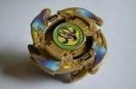

Wolborg 03 (Uriel)
| Wolborg 03 (Uriel) | |
|  | |
| Number: | N/A (Takara), B-102 (Hasbro) |
|---|---|
| System: | 5 Layer System, Magnecore |
| Type: | Balance |
Contents
- Note: There is a large amount of confusion about the name of this Beyblade due to the Japanese name and the pronunciation used in the anime both strongly resembling "Ariel". The name used in this article, Wolborg 03 (Uriel), is the correct full name of the Beyblade for both Takara releases as written in the instructions of its successor, Uriel 2, while the Hasbro version omits the zero and the bracketed section, dubbing it Wolborg 3.
Release
Takara initially released Wolborg 03 (Uriel) in gold with a red tip, as a limited edition Beyblade through the CoroCoro magazine, and later released the Black Version as an event exclusive recolor. Hasbro released the Black Version of this Beyblade under the name Wolborg 3 in the G Revolution era, though it came with a white tip rather than the red of its Takara counterpart.
Important Note About Breakage Issues
The original version of Wolborg 03 (Uriel), as a result of weaknesses in the gold plastic it is made of, suffers from a condition known as Gold Plastic Syndrome, rendering it extremely fragile. As such, it is strongly recommended not to use the gold parts of this version of the Beyblade.
Attack Ring (AR): Cross Horn
- Weight: 4.3 grams
Cross Horn is a four-winged Attack Ring which bears a heavy resemblance to Turtle Survivor (Master Dranzer/Metal Draciel). Each wing is preceded by a counterclockwise-facing ram's head design, and compared to Smash Turtle, the heads on Cross Horn are much more smoothly curved, and connect fully to the wings behind them. The tips of each wing are large and rounded, greatly reducing their Smash Attack in right spin compared to the much sharper Turtle Survivor, and despite its smoother profile (particularly in left spin), the size of these protrusions means they protrude past even Wide Survivor to a significant degree, creating an amount of Recoil and rendering it less effective for Zombie customization, to the point it is outclassed by even second-tier Zombie ARs such as Wing Upper and Bearing Gyros AR.
While the sturdier design makes the black versions significantly less fragile than Turtle Survivor, the availability of much more common and effective parts like Scissor Attacker and Tiger Defenser means there is little reason to use such a rare part.
Weight Disk (WD): Revolver Attack
- Weight: 15.0 grams
See Revolver Attack.
Spin Gear (SG): Neo Right SG (South Magnecore)
- Weight: 5.6 grams
See Neo Right SG
Blade Base (BB): SG Grip Base
- Weight (Base): 4.8 grams
- Weight (Tip): 2.7 grams
SG Grip Base is best described as a mirrored version of Dragoon V's Magne Flat Base, with the wings and their segments on the Base Clips being reversed. In addition to this, the shaft section of the Base is widened slightly to allow the tip to spin relatively freely, though this is slightly hampered by the grip of the tip inside the Base. It does however allow Magne Flat Base's tip to spin fairly freely, albeit with some slight wobbling issues.
The other very notable change is the tip: SG Grip Base is the only V-Series Blade Base to include a rubber tip, albeit a rather hard one. The tip strongly resembles that of Magne Flat Base, though it replaces the magnet with a non-magnetised metal piece with a shaft designed to be inserted into a Magnecore to more directly connect that magnetism to the stadium surface. The tip itself is quite small, and while it creates some moderate attack movement, it is heavily outclassed by the much faster tip of Customize Grip Base. In addition to this, while it spins somewhat freely and is passive enough to be used for Defense purposes, it lacks the bearing support of Wolborg 2's SG (Bearing Version 2), and being a rubber tip, this means it has very little Survival. As such, despite being the heaviest tip compatible with most Bases, it sees little use.
The Base itself suffers from the same issue as Magne Flat Base, in essence, the much more versatile Customize Grip Base outclasses it for most uses. The only advantage it holds over Customize Grip Base is its ability to hold Customize Grip Base's tip with Dranzer V's unique Magnecore, which allows the tip to sit higher in the Base, negating the height issues it suffers otherwise. While this causes Customize Grip Base to scrape, SG Grip Base, like Magne Flat Base, suffers no such issues. This, and the lack of a good alternative, makes SG Grip Base the prime choice for this relatively uncommon customization, which is its only notable competitive use, though even here, it is outclassed by Grip Base.
Use in Smash Attack Customization
- AR: Cross Griffon (Griffolyon)
- WD: Wide Defense
- SG: Neo Right SG
- SG Core: South Magnecore (Dranzer V Version)
- BB: SG Grip Base (Wolborg 03 (Uriel))
- Tip: Customize Grip Base Tip (Dragoon V2)
This customization capitalizes on the lower height provided by the Spin Gear and Tip Combination, allowing Cross Griffon to work much more effectively than it would on Customize Grip Base itself. At this height, Cross Griffon easily makes contact with opponents, and combined with the speed of the tip, delivers devastating hits. Wide Defense's external distribution promotes fast movement and its weight is enough to control any Recoil produced. While not quite as effective as Grip Base, this is still one of the better combinations for Cross Griffon, and a very powerful Smash Attack combination overall.
Other Versions
- Wolborg 03 (Uriel) Black Version - Event Limited Recolor, Black with Red Tip
- Wolborg 3 - Hasbro Release, Black with White Tip
Gallery
Wolborg 03 (Uriel) - Original Version
-
Upper View
-
2/3 View
-
Bottom View
-
Side View
-
Parts
-
Attack Ring : Cross Horn
-
Blade Base : SG Grip Base
-
Neo Right SG + Rubber Tip
Wolborg 3 - Hasbro Version
-
Wolborg 3 Hasbro Version
Overall
Wolborg 03 (Uriel) is a decent Beyblade, each of its parts being moderately useful in various combinations, however none of them are particularly exceptional, each being outclassed by more readily available alternatives. This is only worsened by the fragility of the original version, and the rarity of the more resilient ones. As such, this Beyblade should only be purchased for collection purposes.